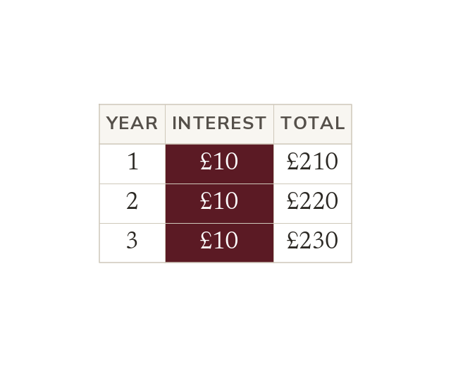

Simple interest adds a fixed amount each period
Simple interest is found on the original amount only. The same interest is added every period. e.g. £200 at 5% earns £10 every year.
Simple interest is calculated once, on the original amount only, and that same amount of interest is added every period (usually a year) - it never grows or shrinks between periods. One period's interest is found using the multiplier method from Lesson 9.5.1: original × rate as a decimal. Over n periods, the total simple interest is n times that one-period amount, since the same interest repeats unchanged each time.